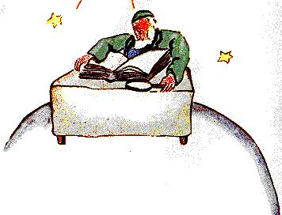

El sexto planeta era un planeta diez veces más extenso. Estaba habitado por un Señor anciano que escribía libros enormes.
- Vaya! He aquí un explorador ! – exclamó cuando divisó al principito.
El principito se sentó sobre la mesa y resopló un poco. Había viajado tanto !
- De dónde vienes ? – le dijo el Señor anciano.
- Qué es ese libro gordo ? – dijo el principito. – Qué hace usted acá ?
- Soy geógrafo – dijo el Señor anciano.
- Qué es un geógrafo ?
- Es un sabio que sabe dónde se encuentran los mares, los ríos, las ciudades, las montañas y los desiertos.
- Eso es muy interesante – dijo el principito. – Éste es, por
fin, un verdadero oficio !. - Y echó un vistazo a su alrededor sobre
el planeta del geógrafo. Nunca había visto un planeta tan
majestuoso.

- Su planeta es hermoso. Tiene océanos ?
- No puedo saberlo – dijo el geógrafo.
- Ah! – (El principito estaba decepcionado). – Y montañas ?
- No puedo saberlo – dijo el geógrafo.
- Y ciudades y ríos y desiertos ?
- Tampoco puedo saberlo – dijo el geógrafo.
- Pero usted es geógrafo !
- Exactamente – dijo el geógrafo – pero no soy explorador. Carezco totalmente de exploradores. No es el geógrafo quien va a contar las ciudades, los ríos, las montañas, los mares, los océanos y los desiertos. El geógrafo es demasiado importante para andar paseando. No abandona su escritorio. Pero en él recibe a los exploradores. Los interroga y toma nota de sus recuerdos. Y si los recuerdos de alguno de ellos le parecen interesantes, el geógrafo hace hacer una encuesta sobre la integridad moral del explorador.
- Por qué ?
- Porque un explorador que mintiera provocaría catástrofes en los libros de geografía. Y también un explorador que bebiera demasiado.
- Por qué ? – dijo el principito.
- Porque los borrachos ven doble. Entonces el geógrafo anotaría dos montañas, donde no hay más que una.
- Conozco a alguien – dijo el principito – que sería un mal explorador.
- Es posible. Entonces, cuando la moralidad del explorador parece buena, se hace una investigación sobre su descubrimiento.
- Se va a verlo ?
- No. Es demasiado complicado. Pero se le exige al explorador que presente pruebas. Si se trata por ejemplo del descubrimiento de una gran montaña, se le exige que traiga de ella grandes piedras.
De repente, el geógrafo se emocionó.
- Pero tú vienes de lejos ! Tú eres explorador ! Vas a describirme tu planeta !
Y el geógrafo, habiendo abierto su registro, le sacó punta a su lápiz. Los relatos de los exploradores se anotan primero con lápiz. Para anotarlos con tinta se espera a que el explorador haya suministrado pruebas.
- Entonces? – interrogó el geógrafo.
- Oh! donde vivo – dijo el principito – no es muy interesante, es bien pequeño. Tengo tres volcanes. Dos volcanes en actividad y un volcán apagado. Pero nunca se sabe.
- Nunca se sabe – dijo el geógrafo.
- También tengo una flor.
- No registramos las flores – dijo el geógrafo.
- Y eso por qué ! es lo más lindo !
- Porque las flores son efímeras.
- Qué significa: "efímero" ?
- Las geografías – dijo el geógrafo – son los libros más valiosos de todos los libros. Nunca pasan de moda. Es muy raro que una montaña cambie de lugar. Es muy raro que un océano se quede sin agua. Nosotros escribimos cosas eternas.
- Pero los volcanes apagados pueden despertarse – interrumpió el principito. – Qué significa "efímero" ?
- Que los volcanes estén apagados o despiertos, a nosotros nos da lo mismo – dijo el geógrafo. – Para nosotros lo que cuenta es la montaña, que no cambia.
- Pero qué significa "efímero" ? - repitió el principito, que nunca en su vida había renunciado a una pregunta una vez que la había formulado.
- Significa "que está amenazado por una próxima desaparición ".
- Mi flor está amenazada por una próxima desaparición ?
- Seguro.
Mi flor es efímera, se dijo el principito, y sólo tiene cuatro espinas para defenderse del mundo ! Y la dejé allá, tan sola !
Ése fue su primer gesto de arrepentimiento. Pero recobró ánimo:
- Qué me aconseja ir a visitar ? – preguntó.
- El planeta Tierra – le respondió el geógrafo. – Tiene una buena reputación...
Y el principito se fue, pensando en su flor.
| Chapitre XIV | |
Capítulo XIV |
| Chapitre XV | Índice | |
| Chapitre XVI | Capítulo XVI |